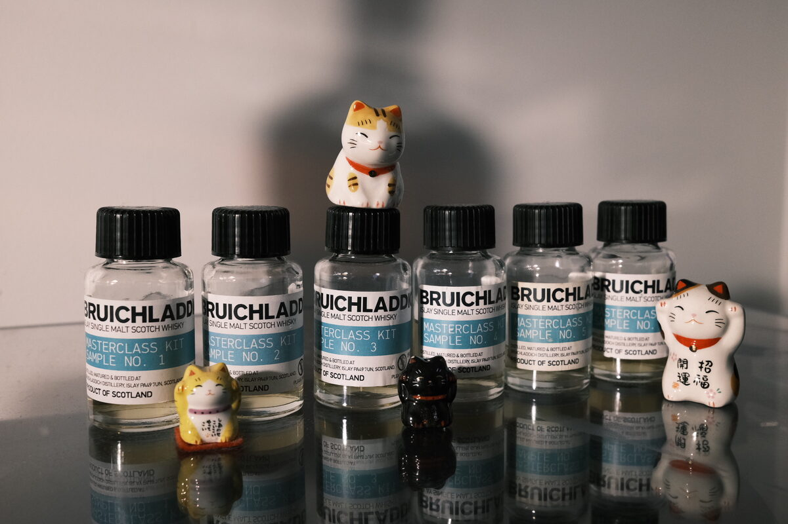

Bruichladdich "Biodynamic" 2011 9 years 60.9% (first fill bourbon, Feis Ile 2021 masterclass sample 4)
Fourth of the 2021 Feis Ile masterclass drams from Bruichladdich. Biodynamic barley. I didn’t know what biodynamic farming was, so I googled it… turns out it’s mostly mysticism. Disappointing, but is the whisky?
Colour Light gold.
Nose Really tight. Green bananas and mangoes, leaves. Lemon verbena – odd! Floral, again. Peanuts. Not much. With water, not much either.
Palate Bananas, pancakes, honey… ricotta hotcakes. Vanilla and caramel. Oak spices, cinnamon and chilli. Oily mouthfeel. Mangoes, apples, pears. With water, lemon peels, oranges.
Finish Fruity sweetness, stewed apples and pears. Apple pie, vanilla ice cream. Pancakes and maple syrup. Cookies. Long and warming. With water, hazelnuts, peanuts, nutty. Some astringency.
Comments Nose is a bit lame, but the cake-like character is pretty good. 84/100.

Posted by Dominic on 17 Jun 2021